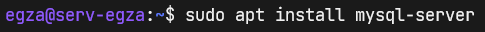
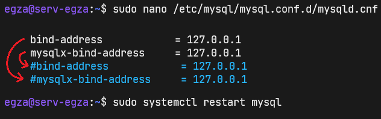
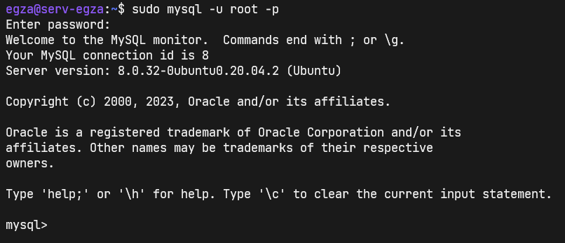
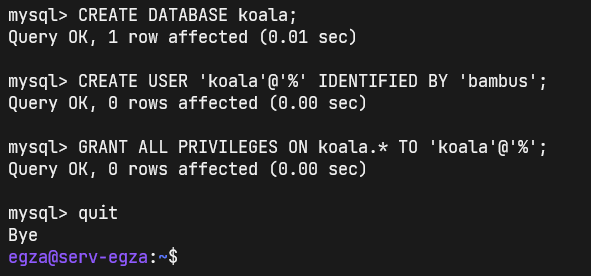
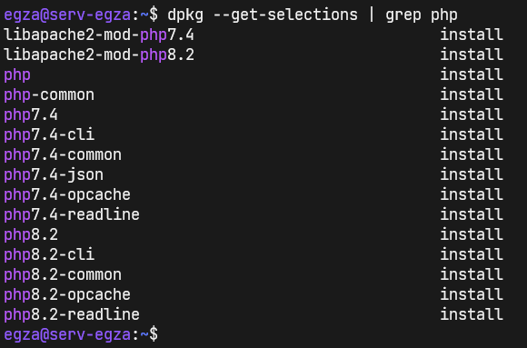
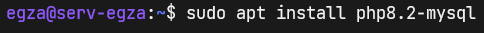
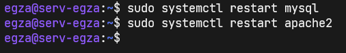
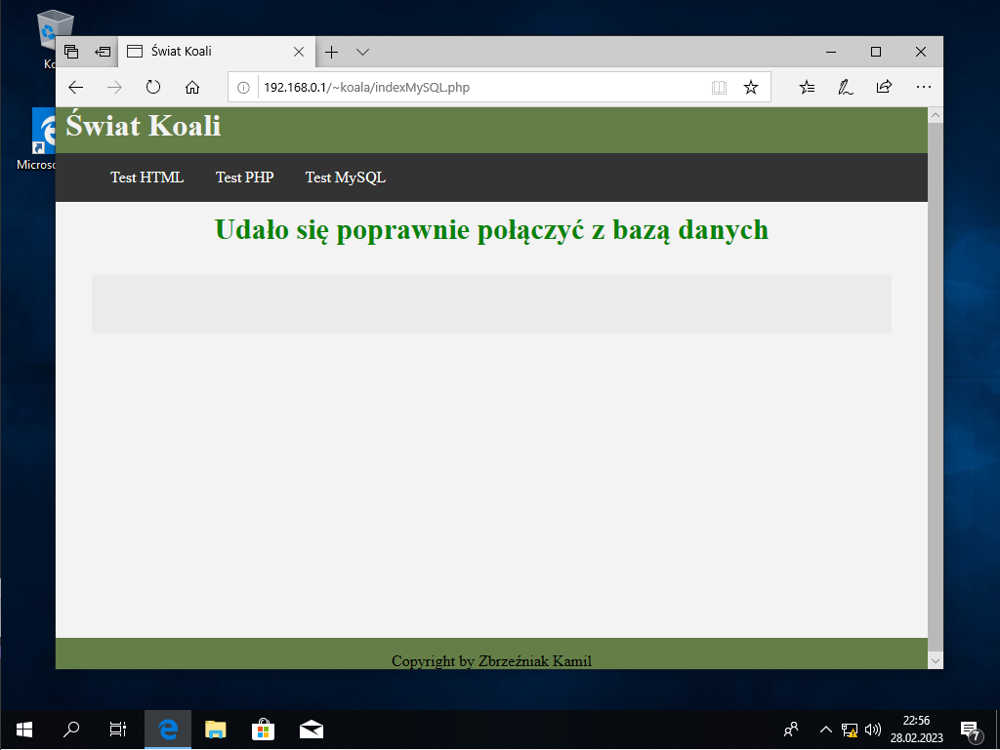

ADMINISTRACJA SYSTEMAMI OPERACYJNYMI / Serwer plików (FTP) / udziały sieciowe - samba
Serwer Web www /part 3 - MySQL
Zainstaluj mysql-server:  Zmodyfikuj mysqld.cnf dodając # do podanych niżej lini. Jeżeli tego niezrobisz mysql bedzie blokować wszystkie połączenia inne niż na maszynie wirtualnej lub fizycznym urządzeniu świadczącym usługi serwerowe.Ps.: Przez SSH też się nie da bo jest to zdalne połączenie z konsolą serwera.  Wykożystując poniższą linię komend połączysz się z serwerem mysql jako root.  Będąc na mysql> wprowadź następujące zapytania SQL:
Utworzenie bazy danych "koala":
CREATE DATABASE koala;
Utworzenie użytkownika koala dla dowolnego połączenia ip z hasłem bambus:
CREATE USER 'koala'@'%' IDENTIFIED BY 'bambus';
Nadanie wszystkich praw do wszystkich tabel w bazie koala dla użytkownika koala @'%' --łączącego się z dowolnego adresu ip:
GRANT ALL PRIVILEGES ON koala.* TO 'koala'@'%';  Sprawdź czy posiadasz pakiet php8.2-mysql:  Jak nie posiadasz to zainstaluj:  Zrestartuj usługi lub uruchom ponownie serwer.  No tym razem się udało, bez wiekszych błedów na maszynie wirtualnej. Za to dzieki przekierowaniu HTTP przez NAT w Google Chrome za pierwszym razem zadziałało :p 